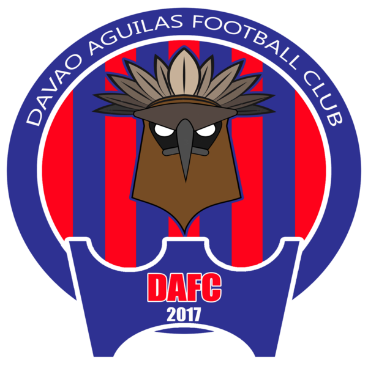
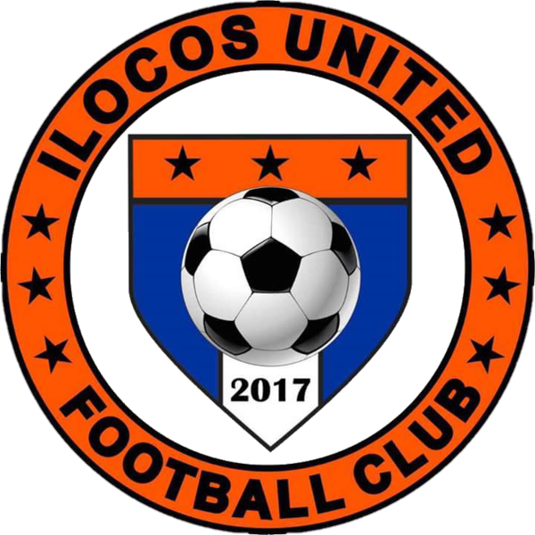

Working Title


Meet the clubs of the first Philippines Football League!
The Clubs
Ceres Negros FC
Davao Aguilas FC
Global Cebu FC
Ilocos United FC
JPV Marikina FC
Kaya FC Makati
FC Meralco Manila
Stallion Laguna FC
More about the PFL